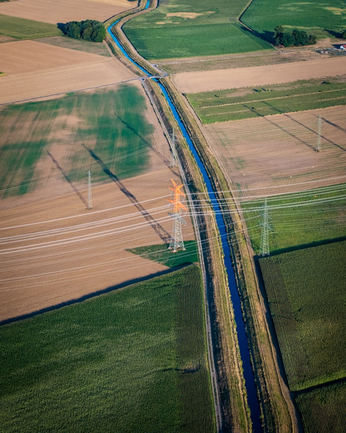
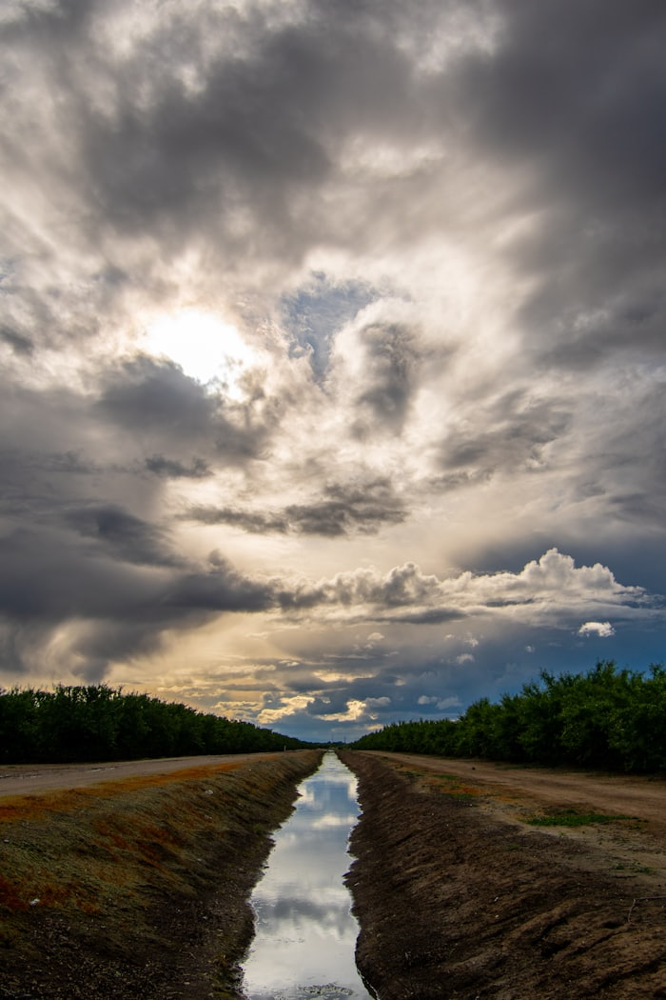
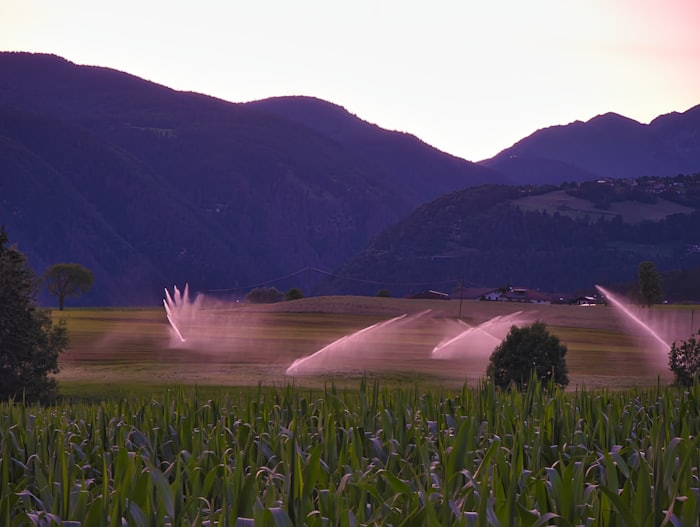

Adán Arias
Ingeniero agrícola, emprendedor y constructor de proyectos
Soy ingeniero agrícola de profesión y paso buena parte de mi tiempo en el campo, en riego y drenaje — para mí, esa es la parte más bonita del oficio. Fuera del campo soy emprendedor: he incursionado en distintos negocios y formas de vender, siempre aprendiendo sobre la marcha. Me apasiona construir cosas con tecnología, y tarde o temprano eso también se va a convertir en una forma de enseñar lo que voy aprendiendo.

Drenaje
Drenaje
RiegoEl campo
Ingeniería agrícola aplicada a riego y drenaje, trabajando directamente en el terreno con productores.
Emprender
Distintos negocios y formas de vender, con marketing y operación propia detrás de cada uno.
Construir
Desarrollo herramientas y aplicaciones apoyándome en tecnología e inteligencia artificial, sin venir de una formación formal en software.
Enseñar
Me gusta compartir lo que aprendo en el camino, de forma práctica y sin vueltas.
Mis recursos para ti
¿Tienes curiosidad por algo de esto? Escríbeme.